Front view of Vor Frue Kirke (The Church of Our Lady), Copenhagen
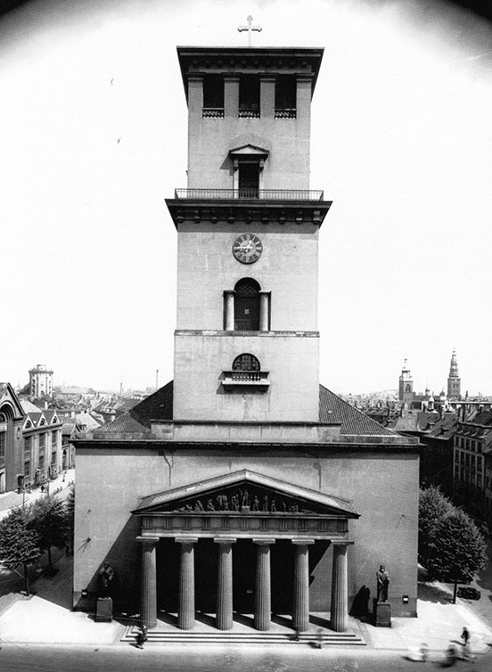
Vor Frue Kirke (Church of Our Lady), Copenhagen, Denmark. Photograph courtesy of Vor Frue Kirke Archives, Copenhagen, Denmark. [full resolution image]
Image 481
Bertel Thorvaldsen’s sculpture Christ, in Vor Frue Kirke (The Church of Our Lady), made a deep impression on Anna Whistler, who viewed it in July 1848.
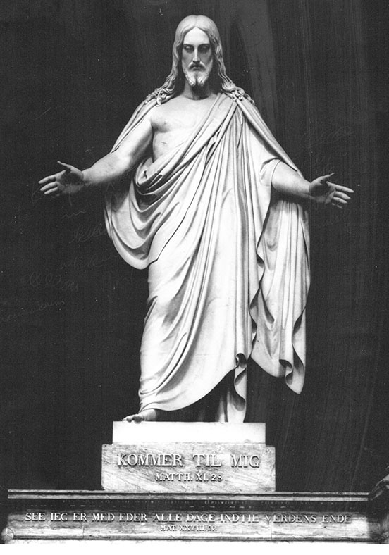
Bertel Thorvaldsen. Christ. c. 1830. Marble. Vor Frue Kirke (Church of Our Lady), Copenhagen, Denmark. Photograph courtesy of Vor Frue Kirke Archives. [full resolution image]
Image 482
Anna Whistler viewed the Angel font resting on a carpet when she visited Vor Frue Kirke (The Church of Our Lady) in July 1848.
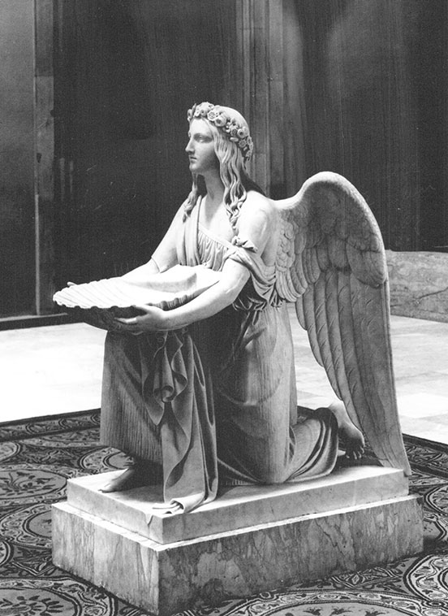
Bertel Thorvaldsen. Angel Font resting on carpet. Vor Frue Kirke (Church of Our Lady), Copenhagen, Denmark. Photograph courtesy of Vor Frue Kirke Archives. [full resolution image]
Image 483
Anna Whistler viewed the sculptures of the Twelve Apostles when she visited Vor Frue Kirke (The Church of Our Lady) in July 1848.
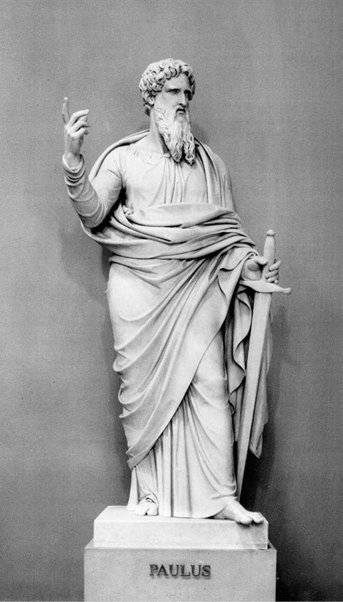
Bertel Thorvaldsen. St. Paul. c.1830. Vor Frue Kirke (Church of Our Lady), Copenhagen, Denmark. Photograph courtesy of Vor Frue Kirke Archives. [full resolution image]
Image 484
Anna Whistler viewed the terra cotta pediment of Vor Frue Kirke (The Church of Our Lady), depicting St. John the Baptist preaching in the wilderness, when she visited the church in July 1848.
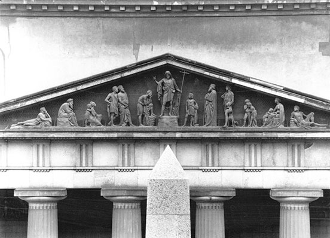
Bertel Thorvaldsen. St. John Preaching in the Wilderness. Terra cotta. On the pediment of Vor Frue Kirke (Church of Our Lady), Copenhagen, Denmark. Photograph courtesy of Vor Frue Kirke Archives. [full resolution image]
Image 485
Oluf Lundt Bang was the Danish obstetrician attending Grand Duchess Aleksandra Nikolaevna in 1844, whom Anna Whistler met on the Camilla in July 1848.
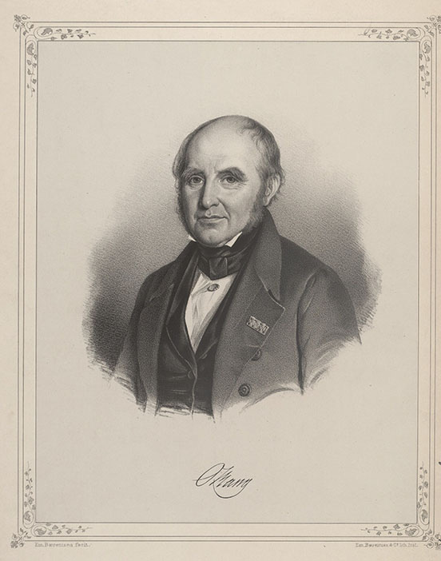
Oluf Lundt Bang. Lithograph. 23.1 x 30.3 cm. Royal Danish Library, Copenhagen (KBP7). [full resolution image]
Image 486
Anna Whistler revisited in 1848 Georgina (Wardrop) Shaw, whom she had met in 1830 through the Stevenson family.
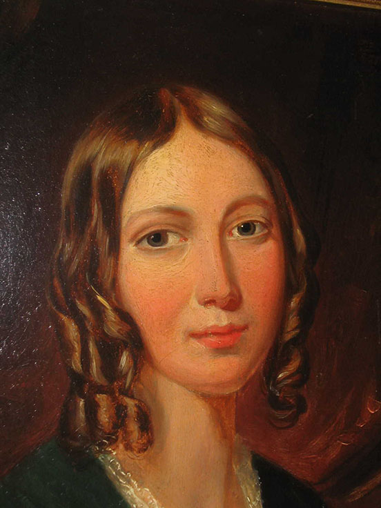
Georgina (Wardrop) Shaw, c. 1814. Image courtesy of John Hersey, descendent of the Shaw family. [full resolution image]
Image 487
Anna Whistler first met Georgina Shaw in 1830, seven years after the death of the latter’s husband, John Shaw.
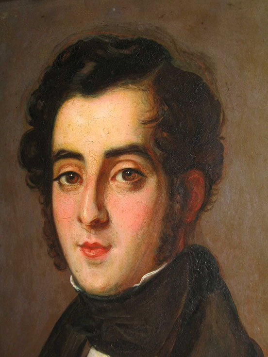
John Shaw, physician, husband of Georgina (Wardrop) Shaw, c. 1814. Image courtesy of John Hersey, descendent of the Shaw family. [full resolution image]
Image 488
When Anna Whistler visited Georgina (Wardrop) Shaw in 1848, she was not allowed to see her frail mother, Catherine (Fraser) Wardrop, whom Anna Whistler called Mrs. Wardrobe.
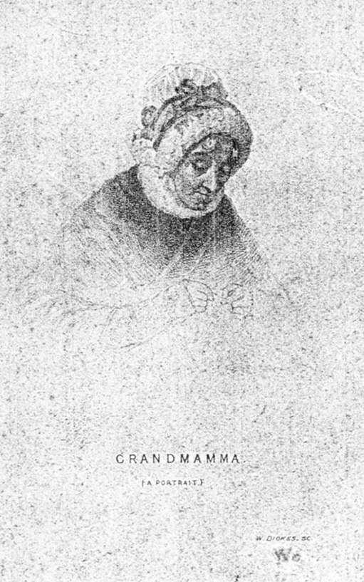
William Dickes. Grandmamma [Catherine (Fraser) Wardrop]. c. 1840s. Image courtesy of John Hersey, descendent of the Shaw family. [full resolution image]
Image 489
Anna Whistler, James, and Willie visited Pastor Richard Henry Smith and his family at Brading Church.
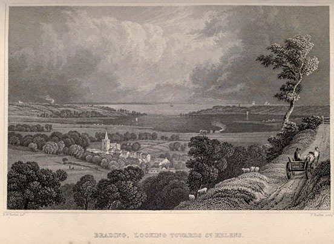
H.W. Bartlett and T. Barker. Brading, Looking Toward St. Helen’s. 1834. Steel engraving. (Barber’s Picturesque Guide 1834, facing p. 28) [full resolution image]
Image 490
Shanklin Chine on the Isle of Wight, with its steps to the sea.
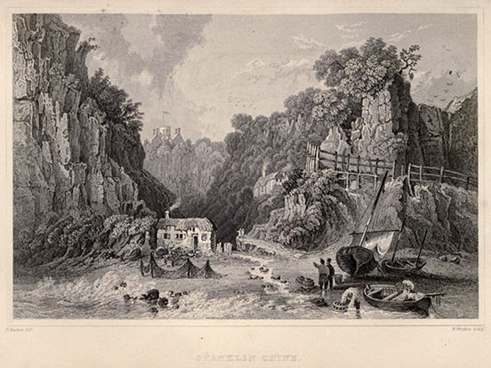
H. Bartlett and H. Winkles. Shanklin Chine. 1834. Steel engraving. (Barber’s Picturesque Guide 1834, facing p. 67) [full resolution image]
Image 491
The parsonage at Shanklin, famed for its myrtles
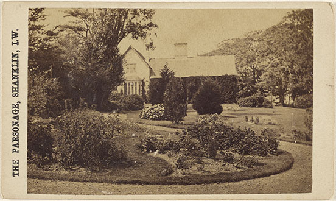
Frederick Hudson (d. 1889). The Parsonage, Shanklin, I.W. Photograph. c. 1870. Courtesy of the J. Paul Getty Museum, Los Angeles, CA, USA (84.XD.1157.1157).
Image 492
Little Jane’s Grave, which Anna Whistler, James, and Willie visited
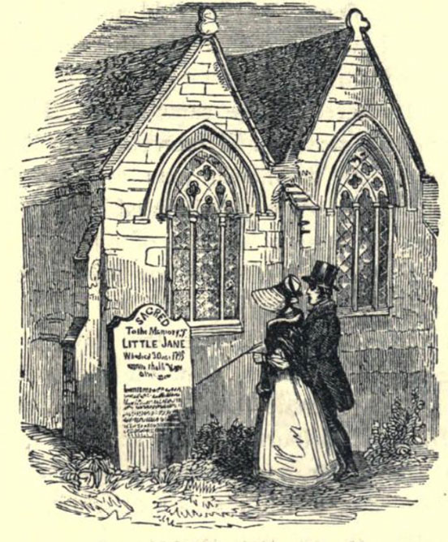
Grave of Little Jane. Sketch. c. 1850 (Richmond, Annals of the Poor [Philadelphia, PA: Presbyterian Board of Publication, n.d.], p. 193) [full resolution image]
Image 493
Anna Whistler, James, and Willie walked from Shanklin through Appuldurcumbe Park, Lord Yarborough’s estate, on their way to Cook’s Castle.
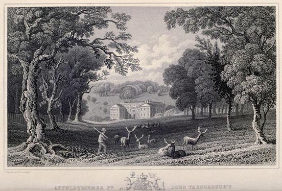
T. Barber. Appuldurcumbe PƵ Lord Yarborough’s. 1834. Steel engraving. (Barber’s Picturesque Guide 1834, facing p. 56) [full resolution image]
Image 494
Blackgang Chine, where James attempted to draw the waterfall and cavern up the side of the precipice
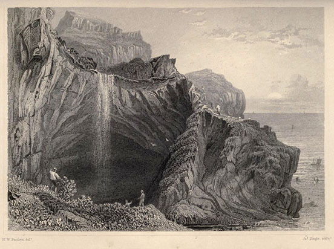
H.W. Bartlett and J. Tingle. Black-Gang Chine. 1850. Steel engraving. (Barber’s Picturesque Guide 1850, facing p. 83) [full resolution image]
Image 495
St. Lawrence Church in 1834 before an extension in 1842 made it no longer the smallest church on the Isle of Wight.
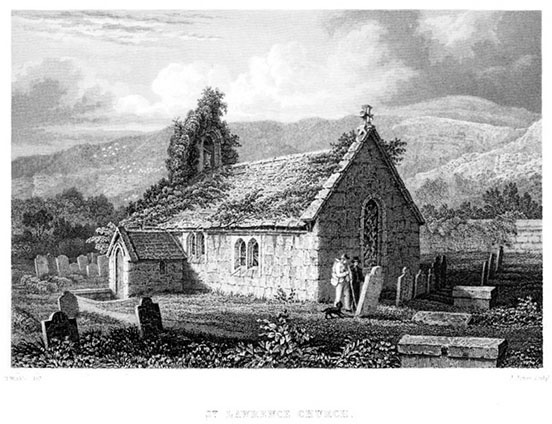
H. Winkles and J. James. St. Lawrence Church. 1834. Steel engraving. (Barber’s Picturesque Guide 1834, facing p. 79) [full resolution image]
Image 496
St. Lawrence Church, with its extension, which Anna Whistler saw in 1848.
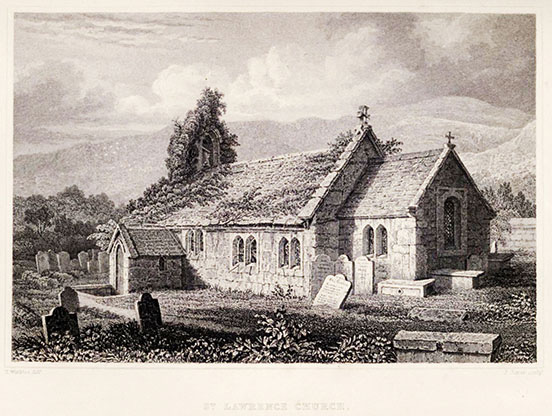
H. Winkles and J. James. St. Lawrence Church. 1850. Steel engraving. (Barber’s Picturesque Guide 1850, facing p. 79) [full resolution image]